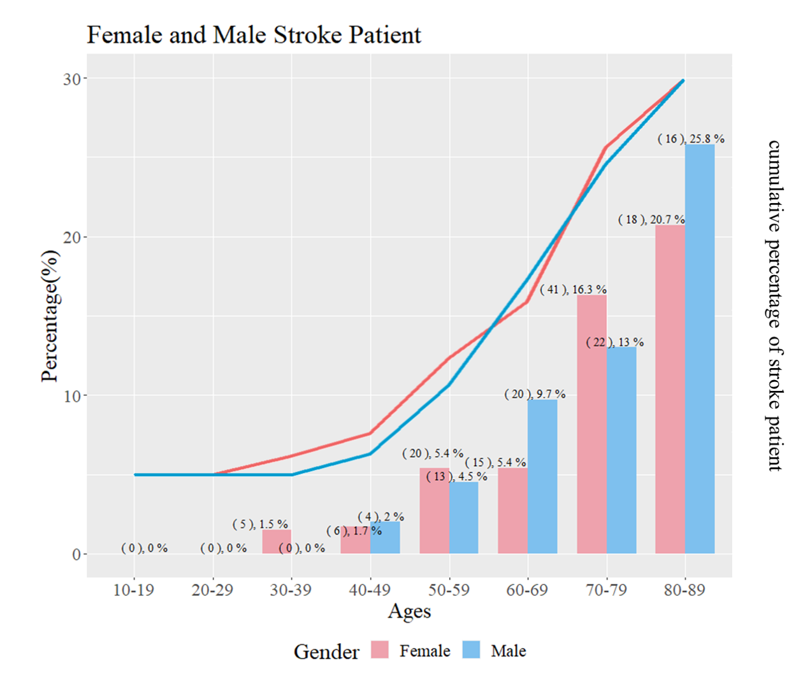
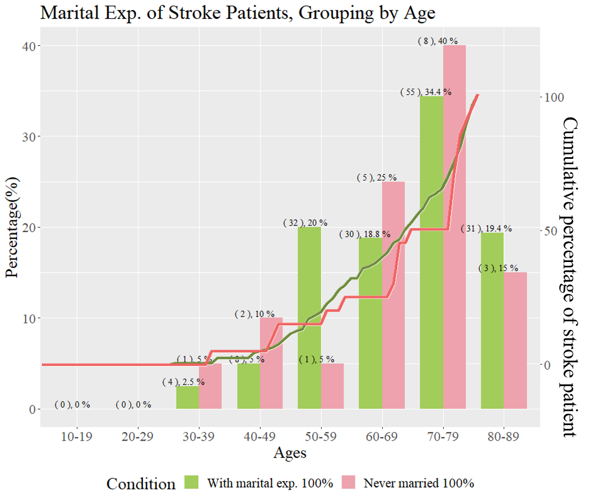

Chapter 7: Age as Confounding Factor¶
Age and Gender¶
{kind=link}
barplot的部分是該年齡層某個性別的中風百分比 lineplot的部分是該性別的中風人數中每加一個年齡層的百分比
性別會對年齡和中風的機率構成影響，美國平均女性更年期是50~52歲，因此可見從50~69該區段的斜率較先前趨緩，而男性過了50歲到79歲這段區間幾乎呈現斜率一致，顯示男性邁入老年後除非已過80，年齡對中風造成的差異一致，然女性可能因為賀爾蒙波動等因素造成每個年齡區段罹患中風的機率不斷波動
Age and hypertension¶

對於未有高血壓的病患，在老年以前對於罹患中風的正影響較低，顯示累積機率之斜率較低。值得注意的是在50歲以前，未有高血壓者罹患中風的比例較高，但過了50歲之後由累積機率的上升斜率可見，50~69歲高血壓對於罹患中風的正影響較為明顯，然過了70歲之後，本表未見高血壓對於中風的是否有影響。
Age and Herat-Disease¶

同時具有心臟疾病與中風的人數有36人，不確定是否會影響判讀，但就上圖，年齡對中風與否的影響，有一部份取決於是否有心臟疾病，未有心臟疾病者，年齡的影響較大。但對於有先心臟疾病者，一旦過了更年期(50歲)之後，右表中的橘色實線的斜率變化顯示，年齡增長對於罹患中風未見其正向影響。
Age and Marry¶
{kind=link}
未有婚姻經驗的人總共826人，但其中中風的僅有20人。換句話說，\(P(\text{Stroke}|\text{Never Marry})=0.02\)，這會讓模型本身看到未婚者，就容易猜沒中風。中風者裡未婚者過少的這件事情，可能是讓婚姻成為重要解釋變數的主要原因。
淺綠色Bar代表\(P(\text{Stroke}|\text{Marry},\text{Age-Group})\)，粉紅色Bar代表\(P(\text{Stroke}|\text{Never Marry},\text{Age-Group})\)
單純看這張圖60-79、70-79的區段，其實”老、未婚的人”罹患中風的比例是比”老、結婚的人”罹患中風的比例還高的。
但認真把count看清楚，會發現，90%的中風者都是已婚，而且這群已婚又中風的人大部份都是大於五十歲的。因此，在之後的模型，結婚這件事情對於中風，其實是隱含年紀大的資訊的。
Age and Smoking Status¶

三組均大於39人。
對於維持抽菸習慣者，觀察右表斜率，年齡之於中風的影響大致可分為三個階段，壯年、(50歲)更年期後十年、邁入老年70歲以後。壯年時期維持抽菸的人口不多，不確定是否具有意義，但可以發現50歲以後之抽菸者，到七十歲以前這段區間若具有抽菸習慣對於罹患中風具有正向影響。然而值得注意的是，雖然在卡方檢定中，我們發現曾經有過抽菸習慣的成功戒菸者們，罹患中風的機會較高，但是本表中可以發現對於60多歲跳到70歲這個階級中，無論是成功戒菸者或是有抽菸習慣者，年齡均會影響其抽菸習慣增加中風機會，兩組斜率均出現變動，因此不排除在卡方檢定中的結果，有受到年齡因素的干擾。原先認為已經成功戒菸者可能菸齡已久，故引導出卡方檢定的結果，然而，目前可得的資料僅能得知平均戒菸年齡，約在40歲以前，又本資料中小於40歲的中風人數過少，故而不在本份報告得以解釋的範圍內。
{kind=link}